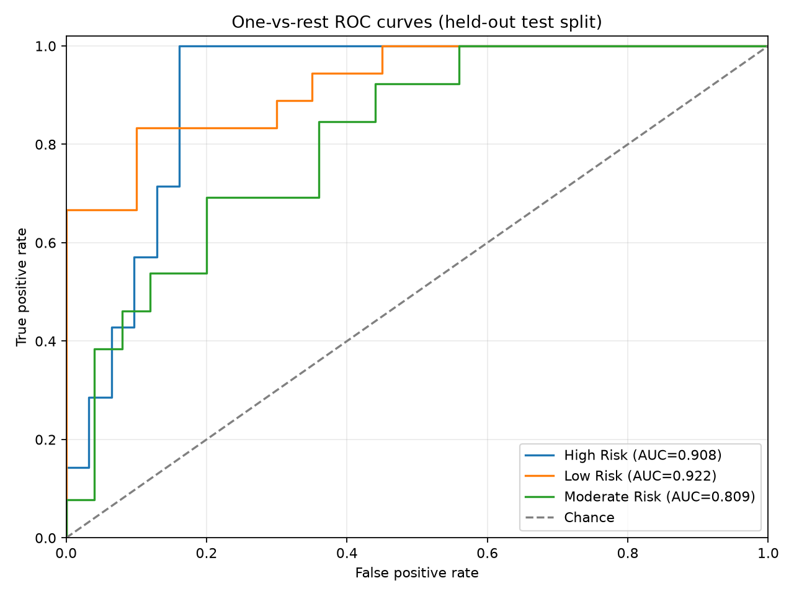

Generated UTC: 2026-10-13T16:40:40.166056+00:00
Model: C:\Users\User\OneDrive\Desktop\thanugowda\main projrct\7th sem project\dengue\backend\app\ml\models\ensemble_model.keras; test rows: 38; features: 48; target: outbreak_risk.
| Accuracy | 0.6579 |
|---|---|
| Macro precision | 0.6295 |
| Macro recall | 0.6001 |
| Macro F1-score | 0.6093 |
| Macro ROC AUC (one-vs-rest) | 0.8798 |
| Actual \ Predicted | High Risk | Low Risk | Moderate Risk |
|---|---|---|---|
| High Risk | 3 | 0 | 4 |
| Low Risk | 1 | 15 | 2 |
| Moderate Risk | 1 | 5 | 7 |

{
"seed": 42,
"inference_repeatability_verified": true,
"probabilities_sha256": "65137c7209b0ba7abe551779a6c3ee6d76fd31d8c53d26937ddd08cd92639639",
"test_csv_sha256": "480fbbaeb6807ad99443726b8027033b0bd17c7b1bcff3f05349140de9b4f4c4",
"model_sha256": "7ce7db17649c59f1488daa11fd6a5badcd12665e377026ea266fc851a71f8e39",
"scaler_sha256": "50f5da739636243b02413d25806fb2084dd007debe5fa171dcfec22a038c1c48",
"label_encoder_sha256": "ac6fc3b4cad882105240e1b72e68d7b7d20051935b0797f8a8037f904656fe38"
}
This is a small, randomly stratified test split from annual State/UT observations and rule-derived case-count labels. Results are preliminary, not calibrated, and not evidence of future-year or operational outbreak forecasting performance.